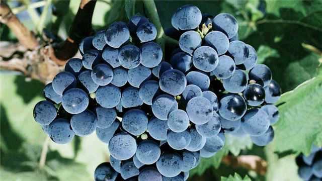
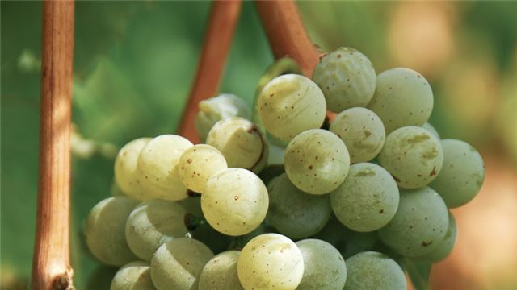

Viveiros Plansel · Montemor-o-Novo · Alentejo
Vides para un viñedo de éxito.
Vides injertadas de las mejores variedades portuguesas. Certificadas y cultivadas en nuestro propio vivero en el Alentejo.
Viveiros Plansel forma parte de Plansel Group: vinos, eventos y saber

- 1975Primeros viñedos en Montemor-o-Novo
- ~50 %de las vides certificadas de Portugal proceden de clones Plansel*
- 50+años de selección clonal de variedades portuguesas
- 12variedades en el programa, además de portainjertos y uva de mesa
- 100 %material vegetal certificado
* Dato de la empresa Plansel, citado por Vinetur, 9 nov. 2026
 Viveiros01
Viveiros01
Lo que ofrecemos
De la vid al olivo.
Conozca Viveiros Plansel y todo lo que ofrecemos a viticultores y olivicultores.
 01ViveroVides injertadas, producidas a partir de las mejores variedades portuguesas.
01ViveroVides injertadas, producidas a partir de las mejores variedades portuguesas. 02Variedades y portainjertosLa historia de las variedades y portainjertos que multiplicamos.
02Variedades y portainjertosLa historia de las variedades y portainjertos que multiplicamos. 03OlivosNuestras variedades de olivo y su evolución técnica y científica.
03OlivosNuestras variedades de olivo y su evolución técnica y científica. 04Servicios y productosServicios y productos para viñedo y olivar, bajo petición.
04Servicios y productosServicios y productos para viñedo y olivar, bajo petición.
 Cómo empezó todo02
Cómo empezó todo02
Cómo empezó todo
Un vivero que cambió Portugal.
Tras comprar la Quinta de S. Jorge en Montemor-o-Novo, Jorge Böhm, alemán de nacimiento con gran afinidad por Portugal, fundó la empresa Plansel.
Creció con el vivero, sobre todo con vides injertadas, hasta entonces prácticamente desconocidas en Portugal. Más tarde se sumó la propagación de olivos por estaca semileñosa.

 Producción03
Producción03
El recorrido de una vid
De la vara a la vid lista para plantar, en ocho pasos.
De la poda al envío, todo el material queda identificado por variedad, clon y categoría de certificación.
- 01Corte de portainjertos
Los portainjertos se cortan en el campo, se clasifican por calibre, se desyeman a máquina, se atan en haces de 200 varas y se desinfectan.
- 02Recogida de varetas
La madera de las variedades se corta en el campo, se ata, se etiqueta y se separa por clon y categoría de certificación.
- 03Almacenamiento en frío
En cámara frigorífica, con humedad y temperatura controladas.
- 04Injerto
Personal especializado injerta en mesa; la máquina realiza el corte en omega.
- 05Estratificación
En cajas con turba, portainjerto y púa se sueldan en una cámara cálida y húmeda.
- 06Vivero en el campo
Las vides crecen en el campo hasta otoño o invierno. Plansel y los servicios oficiales comprueban la variedad y la sanidad.
- 07Selección y parafinado
Cada vid se revisa según los parámetros legales, se cortan las raíces y se parafina, se cuenta y se almacena en ambiente climatizado.
- 08Envío y plantación
En cajas de cartón con plástico contra la deshidratación. Antes de plantar se cortan las raíces; se planta a mano o a máquina.
Certificación
Todo el material vegetal está certificado.
Vendemos en la categoría «certificado», reconocible por la etiqueta azul. El material de nuestros campos de plantas madre va a nuestro vivero, a viticultores y a otros viveristas.
 Variedades04
Variedades04
Viticultura
Las variedades que multiplicamos.
Variedades portuguesas de la selección clonal de Plansel.
- Touriga NacionalVariedad tinta
 Touriga FrancaVariedad tinta
Touriga FrancaVariedad tinta TrincadeiraVariedad tinta
TrincadeiraVariedad tinta AragonezVariedad tinta
AragonezVariedad tinta Tinta BarrocaVariedad tinta
Tinta BarrocaVariedad tinta
CastelãoVariedad tinta ArintoVariedad blanca
ArintoVariedad blanca
Antão VazVariedad blanca LoureiroVariedad blanca
LoureiroVariedad blanca GouveioVariedad blanca
GouveioVariedad blanca ViosinhoVariedad blanca
ViosinhoVariedad blanca- Foto próximamenteAlvarinhoVariedad blanca
Uva de mesa, portainjertos, clones y cantidades: se los indicamos bajo petición.
 Olivicultura05
Olivicultura05
Olivicultura
También los olivos salen de nuestro vivero.
Multiplicamos variedades de olivo por estaca semileñosa y acompañamos su evolución técnica y científica.
 Contacto06
Contacto06
Pedir vides
¿Tiene preguntas? Escríbanos.
Indíquenos variedades, clones, portainjertos y cantidades. Respondemos con disponibilidad y presupuesto.
- Dirección
- Viveiros Plansel, Quinta de São Jorge
Estrada Municipal 537, Porto das Lãs
7050-203 Montemor-o-Novo, Portugal - Correo electrónico
- viveiros@plansel.com
- Teléfono
- +351 266 899 260
Llamada a red fija portuguesa - Seguir
- Instagram · Facebook